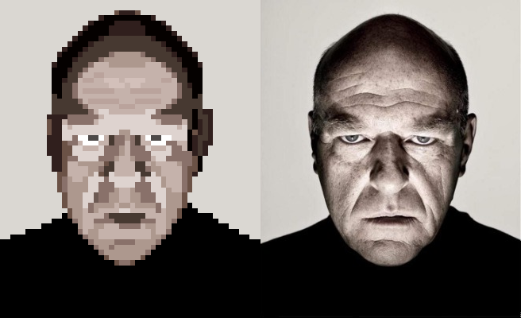
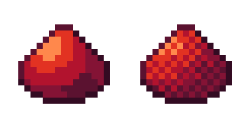

don't be afraid to use references for challenging pieces. sometimes, when making pixel art, it is difficult to convey details or make a palette. using references can usually remedy this, but be careful not to steal art!
typically google images doesn't yield good references, so instead you can use sites like reddit and twitter, or you can join discord servers to get direct feedback.
reference from dean j norris' twitter
different shading styles can give convey different textures.
the texture on the left is completely smooth, and the one on the left is rough.
the shading technique on the right is called dithering, and it is most commonly used to portray rough textures or blend colors together.
anti-aliasing is a technique used to make surfaces appear smoother.
on the left is a circle without anti-aliasing, and on the right is a circle that has been smoothened.
below are more examples of anti-aliasing.